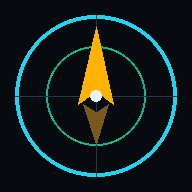

بدون إنترنت
رادار
--كم/س
الاتجاه --° --
الارتفاع-- م
الدقة±-- م
--
--
نوع الخريطة
إذا لم تتوفر صورة القمر الصناعي تظهر التضاريس المحفوظة مكانها تلقائياً. الرادار يعمل دائماً بدون خرائط.
دليل الخطوط
طريق معبّد (مخطط)
غير معبّد — مسار محفوظ
غير معبّد — اتجاه مباشر
تسجيل جديد
مسار مسجّل سابقاً
مسار مستورد
—
تسجيل المسار
الوقت00:00:00
المسافة0 م
النقاط0
النقاط والمسارات
حفظ المنطقة الظاهرة
سيتم تنزيل مربعات الخريطة للمنطقة الظاهرة على الشاشة الآن وتخزينها على الجهاز.
تُنزَّل مرة واحدة، وتظهر خلف الخريطة في أي مكان لا تتوفر فيه صور محفوظة.
—

ملاحةملك الصحراء
ملاحة وتسجيل مسارات تعمل بدون إنترنت
- 📡 سيُطلب إذن الموقع (GPS)
- 🧭 وإذن حساسات الحركة للبوصلة (آيفون)
- 🔆 وتفعيل إبقاء الشاشة نشطة